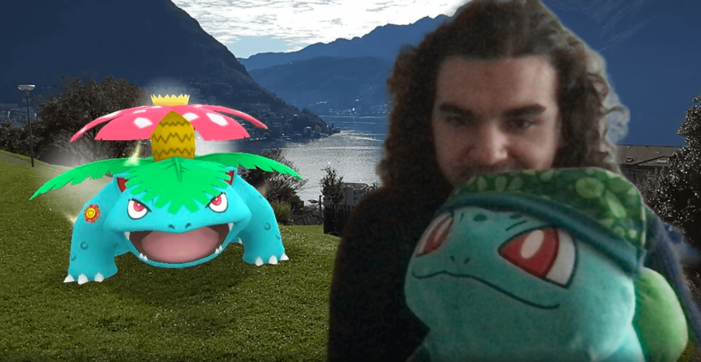

HappyLight
„Ich mag Shorts. Sie sind bequem und einfach zu tragen.“
Als Pokémon Trainer versuche ich täglich der allerbeste zu sein. Das will ich auch im Programmieren, wie JavaScript, erreichen. Dank der FHGR kann ich das üben.
Wenn mich Leute über meine Pokémon Erfahrung fragen, sag ich gerne, dass ich mit Pokémon geboren war. Als ’99 Kid, hab ich den GameBoy Pocket genutzt. Sogar in als 12-jähriger hab ich Pokémon Gold auf dem GameBoy Color gespielt. Erst später hab ich endlich einen 3DS bekommen. Somit konnte ich up-to-date sein mit den Pokémon Games.
Im Bild seht ihr mein Bisasam, den ich Beat genannt habe. Es schaut gern Filme und hat mich in England begleitet. Seitdem hat er ganz viele neue Freunde bekommen, vor allem als ich von Japan zurück kam.
Wir freuen uns schon für nächstes Jahr auf die nächsten Pokémon Spiele und werden sie alle schnappen!
© 2024 by HappyLight. This is a school project. I don't own Pokémon or something. Would be cool though.
PokeAPI is created by Paul Hallett and other PokéAPI contributors around the world. Pokémon and Pokémon character names are trademarks of Nintendo.